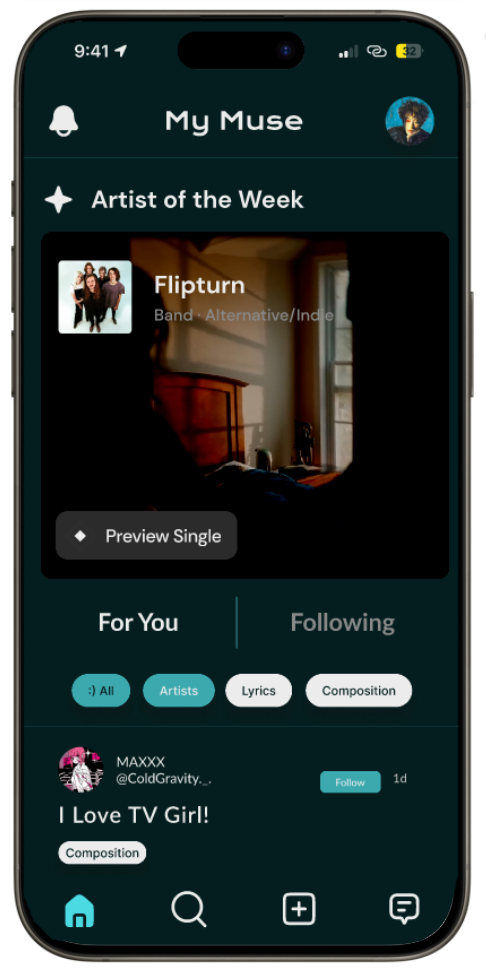
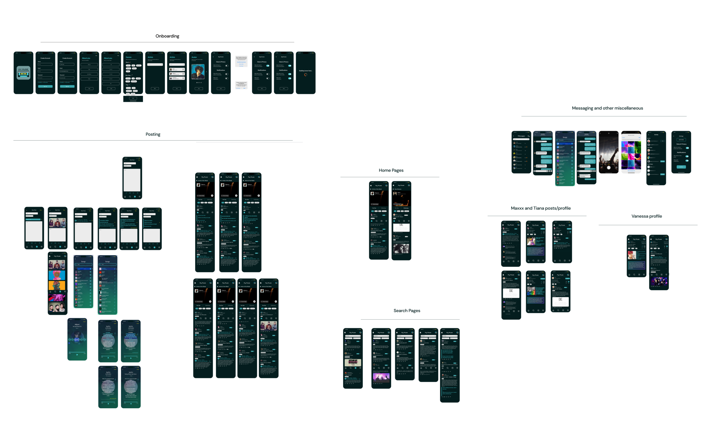

A community driven, music focused social media app.
Goal Directed Design
UX Researcher
UX/UI Designer
4
12 weeks
Figma
Figjam

Understand users and the domain
Create user personas and context
Define user, business, and technical needs
Define the design structure and flow
Assess behaviors, form, and content
The research phase involved gathering qualitative data about potential user needs, behaviors, and goals. The goal of this phase was to develop an understanding of the target audience, which serves as the foundation for creating user personas and defining requirements.
We conducted a comprehensive literature review focusing on the impact of social media on the music industry and collaboration within online music communities. Our findings emphasized the importance of prioritizing user-to-user connections and fostering a sense of community within the app. Additionally, we explored factors influencing user participation in online discussions. We found that having consistent and diverse content is a significant factor to keep users engaged.
In our competitive audit we researched apps that provide communities based on shared interest, such as Reddit and Amino, as well as platforms that are focused on discussing music, like Musicboard and Genius.
We found that having both following and discover pages were indicative of a positive experience. Additionally, features such as trending topics, encouragement to follow genres, artists, and other users during on boarding, and customizable profiles help to boost engagement.

In place of stakeholder interviews, we discussed our app from the perspective of the stakeholders to understand the product's purpose and any business goals that need to be considered. We developed a problem statement using several assumption statements made about the target audience, the app's value, and the market our app will be in.
| Problem Statement: The current state of social media forums has focused primarily on very broad topics and too little profile diversity that encourages interaction between users. Our product will address this gap by creating a space that is much more community driven, focused, and shows each user’s unique personality.
We conducted five user interviews with people representing our target audience, including musicians and music enthusiasts. Through these interviews, we gathered insights into user behaviors and preferences, which informed the development of our personas.

In the modeling phase, we compiled the information we received during our research into our user persona, the fictional representation of our app's typical user. Personas encapsulate the user's behavior patterns, needs, and goals. Doing so gives a face to the user data and guides the design towards user goals.
In order to create our persona, we created 20 behavioral variables from the patterns we recognized during our user interviews By placing each interview subject on a scale for each of the behaviors, we were able to identify clusters of behavior patterns which we then used to develop a persona.


Although the data is somewhat scattered, we were still able to identify an overarching pattern within the responses and determined we had only one user persona. Our persona, given the name Vanessa Wilson, is essentially a synthesis of our research and give shape to the users goals.
Context scenarios walk through the personas interaction with the app. This is important because it ensures that the user’s goals remain at the forefront of the design
We used the actions taken in the context scenario to create a list of requirements the users need to access in order to reach their goals and any features they might expect the app to have.
Some of are user requirements are:
We used the requirements list to determine the key path scenario, the main path our persona needs to take to achieve their goal. Our key path starts on the home page and navigates through browsing the app, searching for a specific term, and interacting with a post. The key path also includes our user checking their notifications for updates. Validation scenarios are smaller scenarios used to validate possible paths not reached in the key path scenario. Our validation scenarios include the user viewing their own profile, changing settings, or adding filters to a search.
We created the wireframe by mapping out our key path and validation scenarios. The wireframing was an important step because it allowed us to create a draft of the prototype without thinking about the design so that we could focus on the flow of the app.


Due to time constraints, we only held two usability tests. The feedback we got was important because it brought attention to a some smaller things the we overlooked, like broken links or things that seemed clickable but weren't or vice versa. For example, the follow button in the notifications page was different from the follow button in the feed pages and didn't change on click.